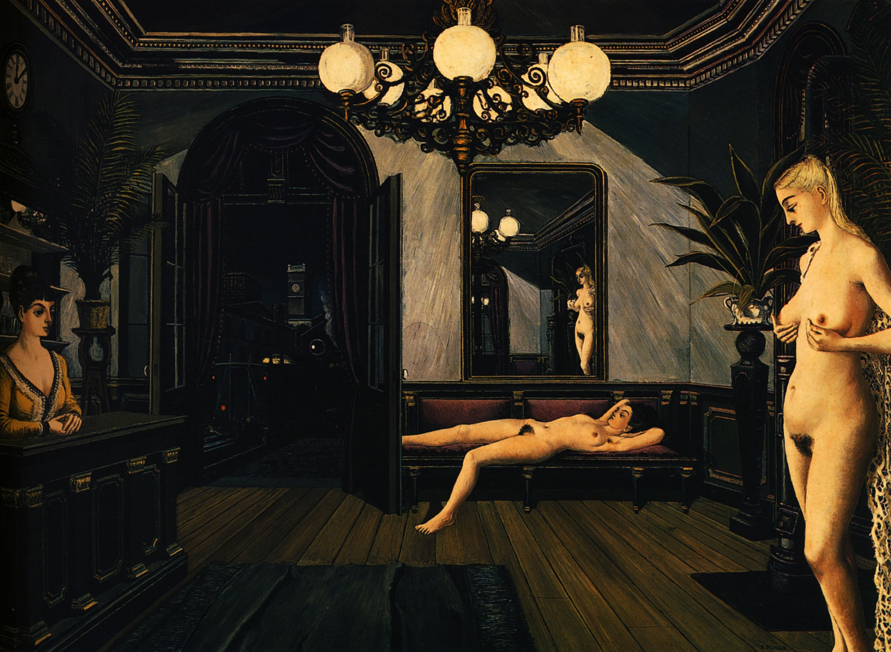

Lágrimas de Eros · Obra 99 de 124
Tren de noche (Train de nuit)
Paul Delvaux (1947)

Una sala de espera en penumbra, con un desnudo tendido en un banco, otro de pie junto a una palmera, un espejo que no refleja bien lo que tiene delante y, por la puerta, la estación de noche. La compró en 1981 el museo de Toyama (Japón).
Lo que hace que destaque
Una sala de espera en penumbra, con un desnudo tendido en un banco, otro de pie junto a una palmera, un espejo que no refleja bien lo que tiene delante y, por la puerta, la estación de noche. La compró en 1981 el museo de Toyama (Japón).
Contexto histórico
Autoría y procedencia
Paul Delvaux (1897-1994), pintor belga asociado al surrealismo, célebre por sus escenas oníricas de mujeres desnudas en estaciones de tren y plazas arquitectónicas silenciosas.
En los libros
Las lágrimas de Eros, de Georges Bataille · Lámina de la p. 176
Ficha pendiente de contrastar con fuentes académicas.